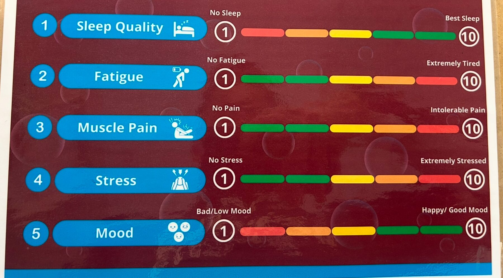
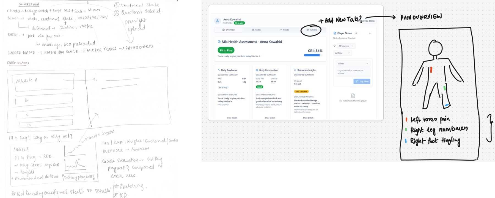
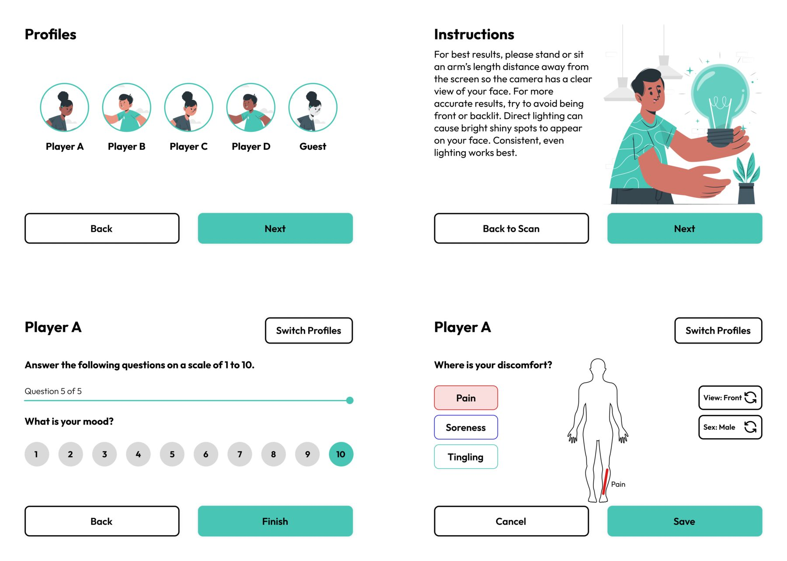
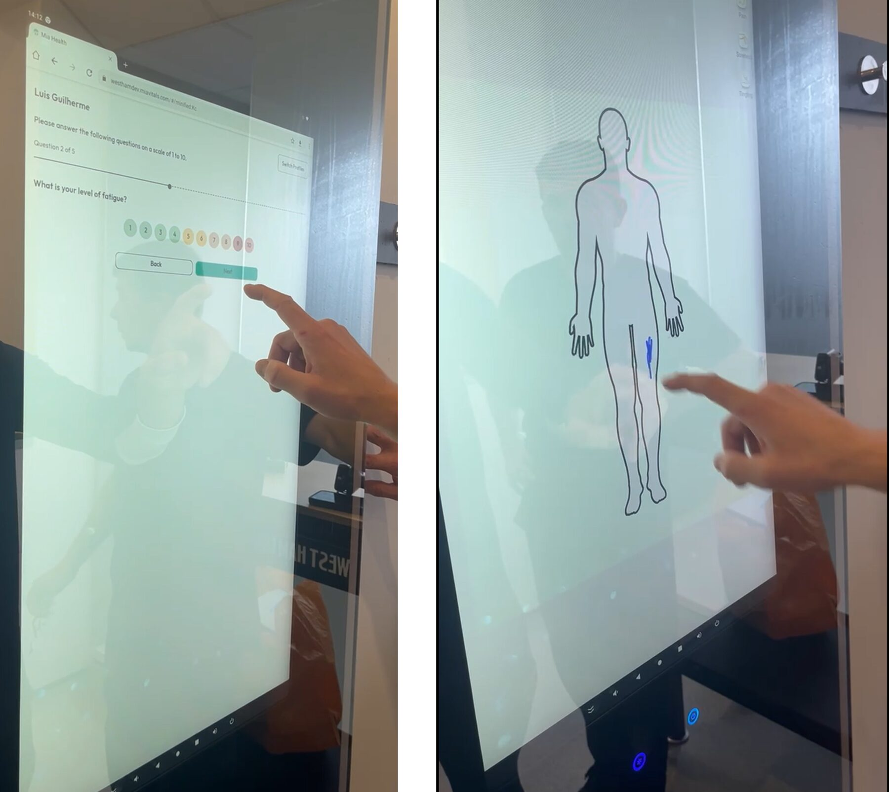

The Problem
Two hours a morning, lost to a spreadsheet
A leading English Premier League soccer team was tracking their players' weight, biometrics, and sleep data via a manual Excel-sheet questionnaire that ate up to two hours of the team's time every morning.

Chart that was used to track players' recovery every morning.
Players would also frequently give an answer that didn't match their actual sleep quality, just to gain more time on the field. They had wearables tracking biometrics off the field, so there was plenty of data to work with, but no cohesive, efficient workflow. The team physician and coach were trying to optimize performance while ensuring rest and recovery, but were relying on a cumbersome manual process to do it.
My Role & User Research
I worked on the design of the application that would transform the manual process into a digital workflow, in collaboration with the Product Lead who designed the coach dashboard. I adapted the existing brand design for an app that could run on a smart mirror.
I spoke primarily with the Head of Sports Science and Innovation and the Team Physician to understand the morning workflow. The check-in included a one-on-one chat where staff took the players' weight and biometrics, then asked five questions about sleep, fatigue, aches, and pains — rated 1–10. This chat alone took at least an hour every day, meaning less time out on the field.
The Solutions
To make the morning check-in more efficient, the product team suggested a smart mirror installed in the locker room, paired with a Withings smart scale that records body composition automatically — eliminating manual weigh-ins. The mirror ran a simplified version of the app: a quick scan captured biometrics while the player weighed themselves, leading into a self-report questionnaire about sleep, rest, and recovery.

Quick wireframing for the scan workflow.

Simplified mirror design elements.
The design for the smart mirror had to be simplified, with large icons and font sizes for better visibility in a fast-paced locker room. The simple design made for quicker scans, and players were more willing to answer wellness questions truthfully because they could self-report, rather than telling a medical staff member about fatigue or muscle pain. The pain-marker screen proved invaluable, letting players quickly label soreness, aches, and other sensations directly on a figurine.

The medical team running through the workflow on the smart mirror.
Changes, Issues, and Lessons
In the first iteration, biometric results appeared right after the scan for the player's reference. After testing with the medical team and players, I learned players didn't want to see their own biometrics first thing in the morning, so that screen was removed — results now surface only on the coach's dashboard. The psychology of athletes posed a unique set of challenges here, and this no-frills approach became the final version deployed on the mirror. Designing for a smart mirror interface was also new territory, and I had to learn about spacing constraints and responsive redesign to make sure the app worked in any orientation.